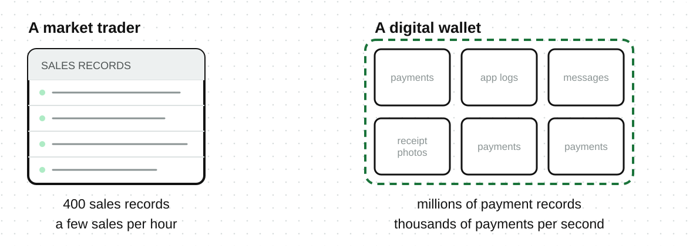

A small furniture shop may record about 20 sales per day in one table, while a digital wallet may record millions of payments per day. Both store transaction data, but the digital wallet needs tools that can handle much more data arriving much faster.
Big data is data that is too large, arrives too quickly, or comes in too many formats for ordinary tools to handle well.
There is no single number that makes data big. What matters is whether the usual tools can still store and process it.
| Part | Simple question | Small furniture shop | Digital wallet |
|---|---|---|---|
| Volume | How much data is there? | About 20 sales per day | Millions of payments per day |
| Velocity | How quickly does new data arrive? | A few sales per hour | Thousands of payments per second |
| Variety | How many formats does it use? | One sales table | Payment records, app logs, messages, and receipt photos |
A dataset can be difficult to handle because of one V or several at the same time.
Two organizations can use different tools for the same dataset. A file with 2 million rows may be too large for a spreadsheet but easy for a database.
Data becomes big when the tools normally used are no longer enough. Many small shops, schools, and clinics can answer their questions with ordinary tools. They do not need big data systems.

When one machine is not enough, the work is divided across several machines.
| What changes | What it means |
|---|---|
| Storage | Data may be stored across several machines |
| Processing | Several machines may work on the data together |
| Quality | Missing or incorrect values are harder to find among millions of records |
| Management | Copies of data are harder to track, protect, and delete |
More data is not always better. A small, clean dataset can be more useful than a large dataset with missing or incorrect values.
The furniture shop can answer a useful question with 20 accurate sales records. Millions of unreliable records may give the wrong answer.